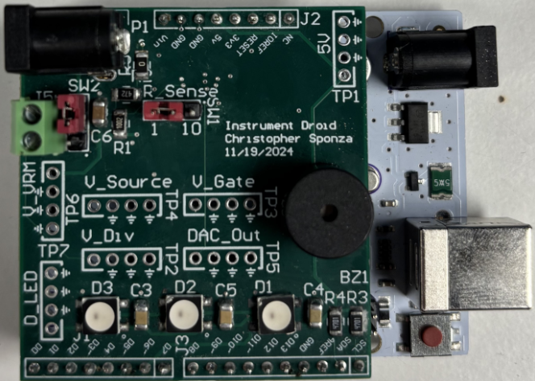

My Projects
Back to Home
Astable 555 Timer PCB
Click the image to view the full report(PDF).
Good Vs. Bad PCB Design
Click the image to view the full report(PDF).
Golden Arduino Board
Click the image to view the full report(PDF).
VRM Instrument Droid Shield for Arduino

Click the image to view the full report(PDF).